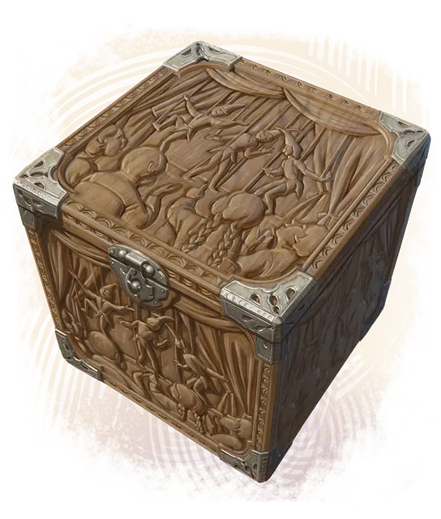

Универсальный пантограф
Universal Pantograph
Чудесный предмет, артефакт

Универсальный пантограф — это кубический ящик 2 футов в каждом измерении. На вид он сделан из дуба, окован серебром, и на его поверхностях выгравированы куклы и смеющиеся дети.
Когда немагический предмет помещают в ящик и закрывают крышку, рядом с ящиком появляется идеальная копия этого предмета.
Клонирование. Вы можете действием Магия заставить пантограф вырасти достаточно, чтобы внутри могло поместиться, сгруппировавшись, Среднего размера существо. Вы можете действием Магия вернуть пантограф к обычному размеру; при этом всё, что больше не вмещается внутрь, безвредно выталкивается в ближайшее незанятое пространство.
Когда внутри пантографа находится существо, вы можете закрыть крышку и посыпать пантограф алмазным порошком стоимостью не менее 100 ЗМ. Если вы сделаете это, алмазный порошок расходуется, и вы сотворяете заклинание Клон, нацеливаясь на существо внутри пантографа. После завершения времени сотворения заклинания существо внутри безвредно выталкивается из пантографа, и крышку пантографа нельзя открыть в течение 120 дней; в это время внутри растёт созданный заклинанием дубликат. Когда клон полностью сформирован, он безвредно выталкивается из пантографа, а пантограф возвращается к исходному размеру. Клон, созданный пантографом, не нужно содержать в сосуде и он существует бессрочно, пока инертен.
Уничтожение пантографа. Если пантограф не содержит клона, он уничтожается, если будет погружён в болото в Стране Фей на 999 лет.